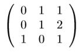
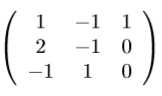

2.1. Elméleti levezetés, kidolgozás
Giapetto Fafaragó C´ege kétfajta, fából készült játékot gyárt: katonákat és vonatokat.
Egy katon´at 27$-´ert lehet eladni, ´es el˝o´all´ıt´as´ahoz 10$ ´ert´eku˝ nyersanyag szu¨ks´eges ´es minden legy´artott katona 14$-ral n¨oveli Giapetto k¨olts´egeit.
Egy vonat 21$-´ert adhat´o el, el˝o´all´ıt´as´ahoz 9$ ´ert´eku˝ nyersanyag szu¨ks´eges ´es minden legy´artott vonat 10$-ral n¨oveli Giapetto k¨olts´egeit.
A vonatok ´es a katon´ak gy´art´asa k´etf´ele szakmunk´at ig´enyel: Felu¨letkezel˝o ´es fafarag´o munk´at
Egy katona el˝o´all´ıt´asa 2 ´ora felu¨letkezel˝o munk´at ´es 1 ´ora fafarag´o munk´at ig´enyel.
Egy vonathoz 1 ´ora felu¨letkezel´es ´es 1 ´ora fafarag´as szu¨ks´eges.
Giapettonak korl´atlan mennyis´egu˝ nyersanyag ´all rendelkez´es´ere, viszont csup´an 100 felu¨letkezel˝o ´ora ´es 80 fafarag´o ´ora ´all a rendelkez´es´ere. A vonatok ir´anti kereslet korl´atlan, viszont a katon´akb´ol 40-n´el t¨obbet nem tud eladni.
Adj tan´acsot Giapettonak, hogy h´any katon´at ´es h´any vonatot gy´artson, hogy a bev´etele a legt¨obb legyen!
Modell:
| P(x) = |
3x1 + |
2x2 |
-> |
MAX |
| FAFARAGÁS: |
x1 + |
x2 |
≤ |
80 |
| FELÜLET KEZELÉS: |
2x1 + |
x2 |
≤ |
100 |
| MENNYISÉG: |
|
x1 |
≤ |
40 |
| x1, x2 ≥ 0 |
Optim´alis b´azishoz tartoz´o szimplex t´abla:
| B |
PB |
X* |
3 |
2 |
0 |
0 |
0 |
| A5 |
0 |
20 |
0 |
0 |
1 |
-1 |
1 |
| A2 |
2 |
60 |
0 |
1 |
2 |
-1 |
0 |
| A1 |
3 |
20 |
1 |
0 |
-1 |
1 |
0 |
|
P(x)=180 |
|
0 |
0 |
1 |
1 |
0 |
| Bázismátrix: |
Inverz mátrix: |
|  |
 |
V´alaszolja meg az al´abbi k´erd´eseket a feladat u´jb´oli megold´asa n´elku¨l a dualit´as ¨osszefu¨gg´esek alkalmaz´as´aval:
1. V´altozna e Giapetto profitja ilyen munka´ora el´erhet˝os´eg mellett, ha sikeru¨lne 40-n´el t¨obb j´at´ek katon´ara vev˝ot szereznie?
Nem, mert a mennyis´eg felt´etel ´arny´ek´ara 0, ´es a megengedhet˝o n¨oveked´esre nincs fels˝o korl´at. Optim´alis esetben sem ´eri meg 20-n´al t¨obbet gy´artani.
2. Giapetto szeretn´e megn¨ovelni a j´at´ekvonatokb´ol sz´armaz´o bev´etelt, szu¨ks´eges e u´jb´oli optimaliz´al´as ha 1$-ral n¨oveli az ´arat? Mennyi lesz ´ıgy az optim´alis profit ´ert´ek?
A vonatok ´ar´at megv´altoztathatom az al´abbi m´odon:
2−0.5 = 1.5 ≤ p1 ≤ 2 + 1 = 3, azaz ha megn¨oveli 3 $-ra a bev´etelt a vonatokon, akkor is optim´alis lesz a jelenlegi 20 katona, 60 vonat term´ek ¨osszet´etel, a bev´etele pedig ennek megfelel˝oen 60 $-ral n˝o.
3. Egy munkat´ars elt¨orte a kez´et,´ıgy az el´erhet˝o fafarag´o ´or´ak sz´ama lecs¨okkent 10 ´or´aval. Adjunk tan´acsot hogyan ´all´ıtsa be az optim´alis term´ek-¨osszet´etelt a v´allalat!
A fafarag´o ´or´ak sz´ama az al´abbi hat´arok k¨oz¨ott mozoghat az adott b´azisban { x5, x2, x1 }: 80−20 ≤ FF ≤ 80 + 20, azaz meg tudjuk mondani mi legyen ha 10-zel cs¨okkenne az el´erhet˝o ´orasz´am:
P(x') = 180−(10∗1) = 170, ´ıgy csak 170 $ profitot tud el´erni, az al´abbi m´odon:
x1 + x2(+ x3 = 0) = 80−10 = 70
2x1 + x2(+ x4 = 0) = 100
x1 + x5 = 40
x'1 = 30 j´at´ek katon´at ´es x'2 = 40 vonatot gy´artson!
4. A felu¨letkezel´es munkafolyamat ´arammal mu˝k¨od˝o g´epeket ig´enyel, ´am a h´eten ´aramszu¨net lesz, Giapetto gener´atorai csup´an 60 felu¨letkezel˝o ´or´ara elegend˝o ´aramot tudnak szolg´altatni. Hogyan v´altoztasson a term´ek¨osszet´etelen, hogy tov´abbra is optim´alisan mu˝k¨odj¨on a v´allalat?
Mivel a felu¨letkezel˝o ´or´ak sz´ama az al´abbi hat´arok k¨oz¨ott mozoghat: 100−20 ≤ FK ≤ 100+20 ez´ert abban az esetben ha csup´an 60 ´ora el´erhet˝o nem tudunk tan´acsot adni a modell u´jb´oli megold´asa n´elku¨l.
5. M´eg az ´aramszu¨net el˝ott egy kedves szomsz´ed k¨olcs¨on adott neki egy gener´atort, amivel m´ar 90 felu¨letkezel˝o ´or´ahoz elegend˝o ´aramot tud szolg´altatni, ebben az esetben meg tudjuk e mondani neki hogy hogyan mu˝k¨odtesse v´allalkoz´as´at?
Igen, mivel a 90 ´ora a hat´aron belu¨l esik, ´ıgy a profitja : P(x') = 180−10∗1 = 170 $ lesz.
A term´ek¨osszet´etel pedig az al´abbi m´odon kell be´all´ıtani:
x1 + x2(+ x3 = 0) = 80
2x1 + x2(+ x4 = 0) = 100 − 10 = 90
x1 + x5 = 40
x'1 = 10 j´at´ek katon´at ´es x'2 = 70 vonatot gy´artson!